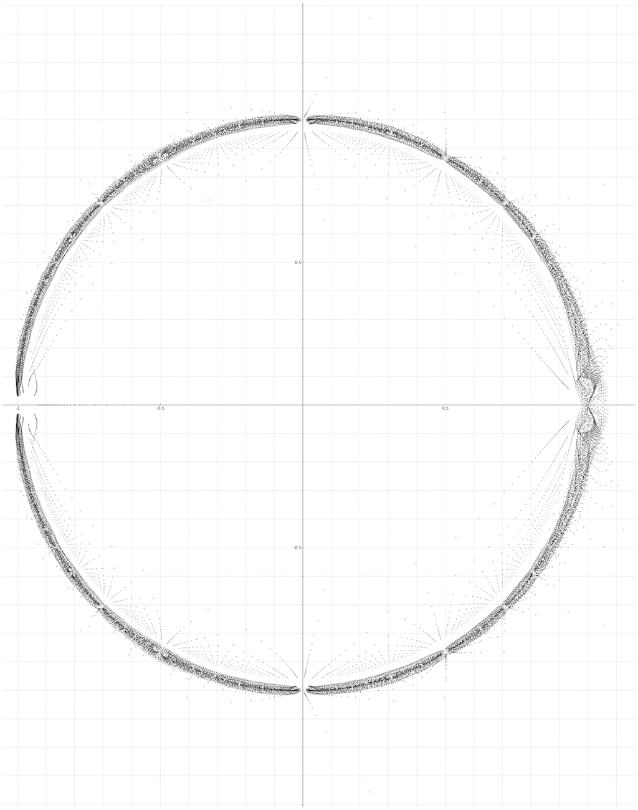
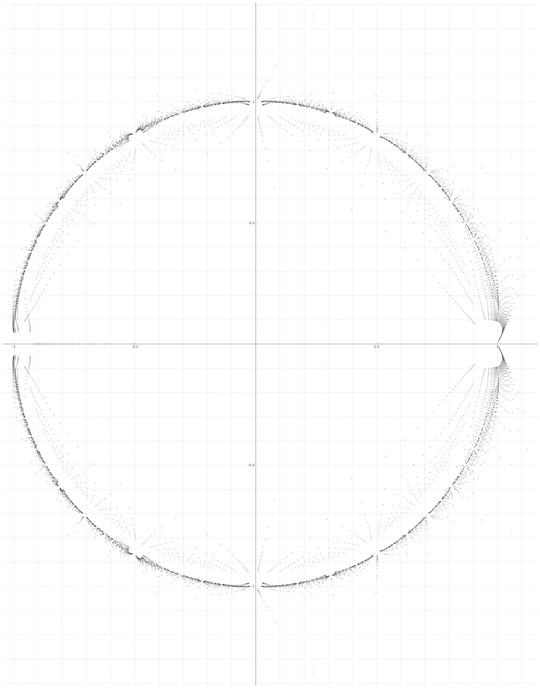
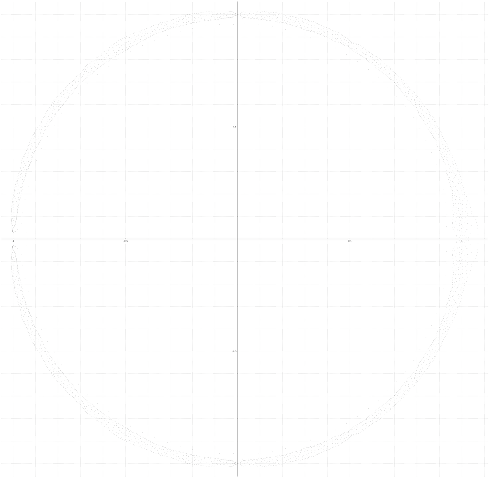
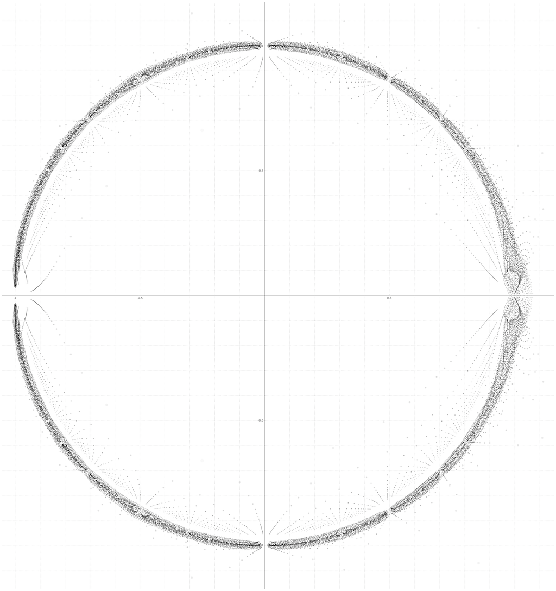
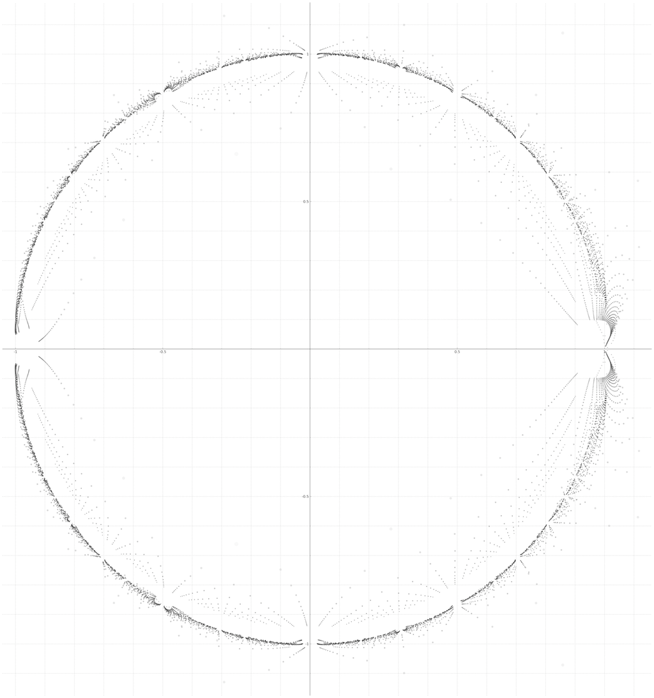
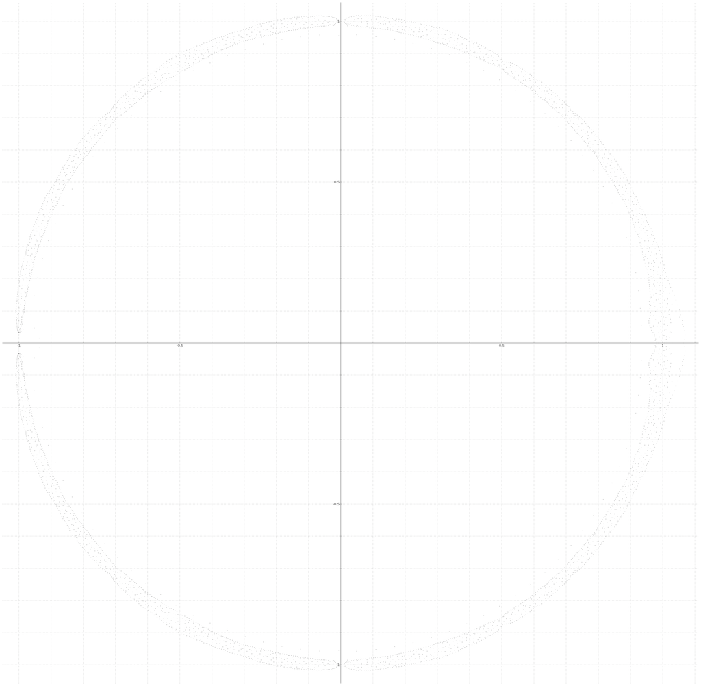

Below are various plots of the polynomial $P_n(z)$ for $3 \le n \le 104$. Smaller and darker dots represent larger $n$. For a precise inspection use a tool like DigitalColor Meter (for mac) to discern exactly which $n$ a dot represents. If a point has RGB colours $(col,col,col)$, then $\deg(P_n(z)) = (250-col)/5+b$, where $b=3$ for odd $n$ and $b=4$ for even $n$.
Click the images for large versions of the plots. Click here to download all plots, large and small versions (22mb).
Below: Pn_oddplot_n_3_103.png
Below: Pn_oddplot_n_3_67.png
Below: Pn_oddplot_n_103.png
Below: Pn_evenplot_n_4_104.png
Below: Pn_evenplot_n_4_68.png
Below: Pn_evenplot_n_104.png
